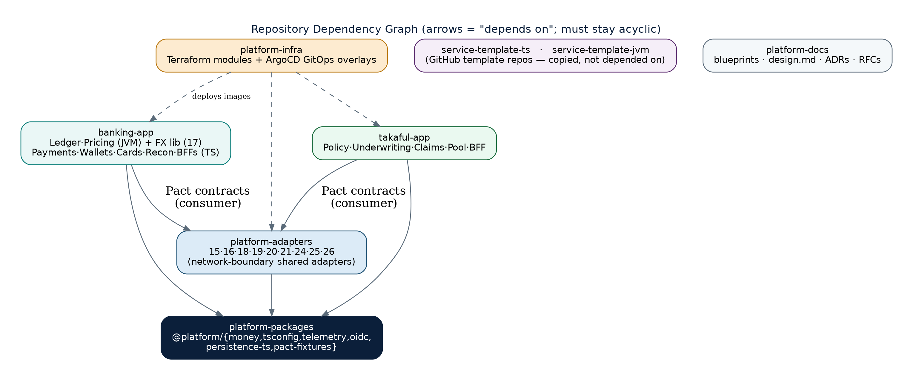
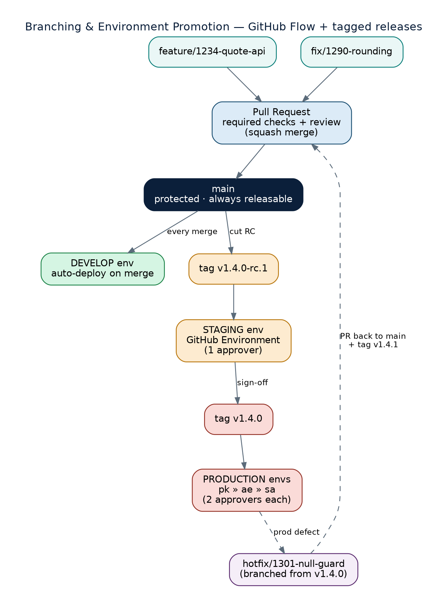

Hexagonal services, a shared adapter layer, one repository topology, and a stack decision that keeps most of the platform in one language.
Every service is hexagonal: domain logic in the middle, ports at the edge, adapters translating to the outside world. Zoomed out, the whole platform follows the same shape.

platform-packages sits at the root; everything depends downward onto it. The two apps depend on platform-packages and on platform-adapters (contract-verified via Pact) \u2014 never the reverse.
banking-app, not the adapters repo; OIDC ships as a client package; Persistence is dual-language.
Short-lived feature branches merge to a protected main. Environments are fed by promoting the exact same signed artifact through tags and approvals: develop auto-deploys, staging needs one approval, production needs two \u2014 per region.
develop branch \u2014 environments are a deployment concern, not a branching one.A float or rounding error in the ledger or a quote is catastrophic \u2014 exact BigDecimal arithmetic and JVM throughput justify leaving the TypeScript default in exactly these three places.
Every shared adapter, every domain service and every BFF is NestJS/TypeScript. The exception is drawn as narrowly as possible: Ledger, Pricing and the in-process FX library \u2014 nothing else.
@platform/money), dependency-cruiser boundary tests, and strict TypeScript config.